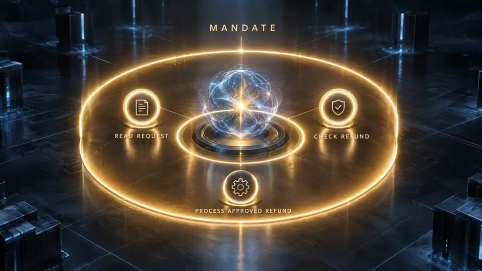
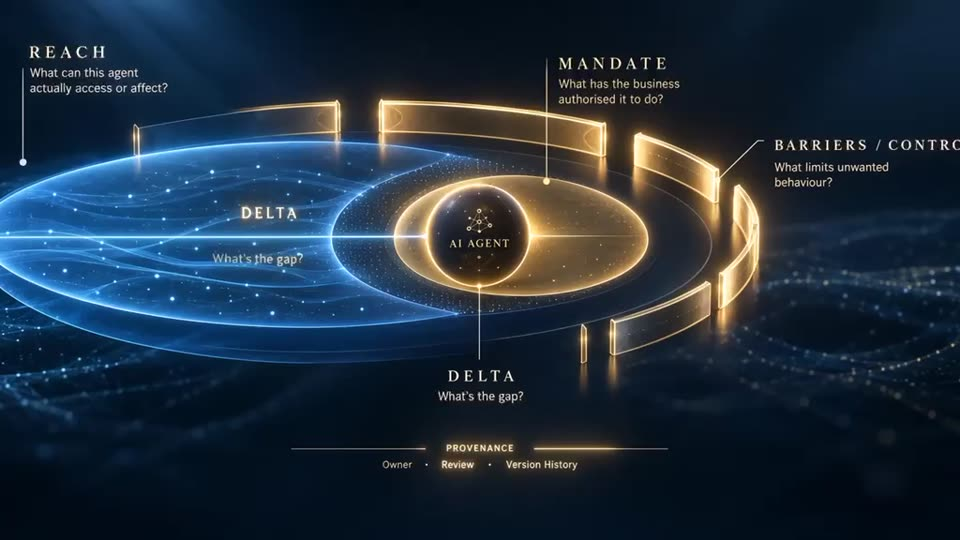
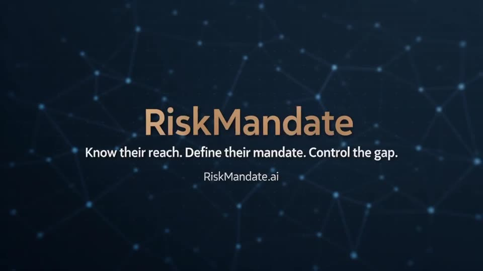

Reach, Mandate, Gap: the visual explanation
By Silvio Switha, November 2026. 53 seconds, no narration needed. The operator's verdict: "spot on: I really like those visual explanations."
What it shows
- An agent at the centre of a network: email, files, payments, APIs, customer data, internal systems. Everything it is connected to.
- The Mandate: a gold ring around a small set of tasks the business authorised (read a request, check a refund, process an approved refund).
- The Reach: a much larger blue dome around everything the agent can actually access or affect.
- The Delta: the gap between Reach and Mandate. What the agent could do, but was never asked to.
- Scale: one agent, then 10, 100, 1,000+, across finance, HR, customer service and coding, with one record per agent that operators, security, leadership and insurance each read from their own side.
- The model: Reach (what can this agent actually access or affect?), Mandate (what has the business authorised it to do?), Delta (what's the gap?), Barriers and controls (what limits unwanted behaviour?), and Provenance (owner, reviewer, version history).
 | |
 |  |
The key concepts
- Reach: what an agent can actually access or affect: systems, data, actions, connectors.
- Mandate: what the business authorised it to do: the task, the deployment scope, the purpose.
- Delta (the gap): capabilities within Reach beyond authority.
- Barriers: what really stands in the way: actual controls, evidence, open questions.
- Provenance: who owns it, who reviewed it, which version.
- The line: Know their reach. Define their mandate. Control the gap.
Give feedback
On the videos page.